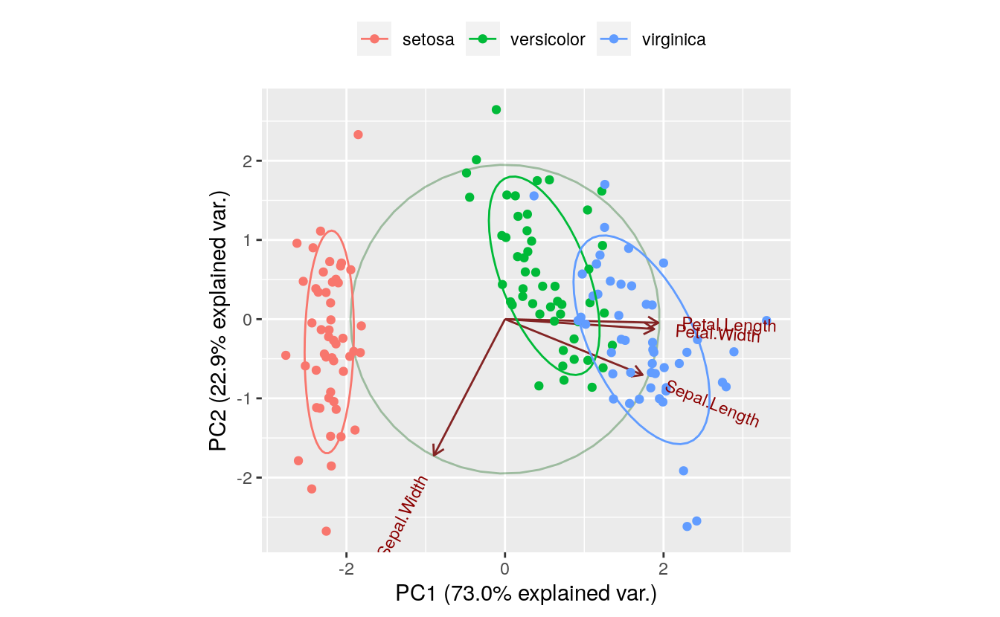

2 Introduction to PCA
Dataset:
iris-
Algorithms:
- PCA
# devtools::install_github("vqv/ggbiplot")
library(ggbiplot)
#> Loading required package: ggplot2
#> Loading required package: plyr
#> Loading required package: scales
#> Loading required package: grid
iris.pca <- prcomp(iris[, 1:4], center = TRUE, scale = TRUE)
print(iris.pca)
#> Standard deviations (1, .., p=4):
#> [1] 1.708 0.956 0.383 0.144
#>
#> Rotation (n x k) = (4 x 4):
#> PC1 PC2 PC3 PC4
#> Sepal.Length 0.521 -0.3774 0.720 0.261
#> Sepal.Width -0.269 -0.9233 -0.244 -0.124
#> Petal.Length 0.580 -0.0245 -0.142 -0.801
#> Petal.Width 0.565 -0.0669 -0.634 0.524
summary(iris.pca)
#> Importance of components:
#> PC1 PC2 PC3 PC4
#> Standard deviation 1.71 0.956 0.3831 0.14393
#> Proportion of Variance 0.73 0.229 0.0367 0.00518
#> Cumulative Proportion 0.73 0.958 0.9948 1.00000
g <- ggbiplot(iris.pca,
obs.scale = 1,
var.scale = 1,
groups = iris$Species,
ellipse = TRUE,
circle = TRUE) +
scale_color_discrete(name = "") +
theme(legend.direction = "horizontal", legend.position = "top")
print(g)
The PC1 axis explains 0.730 of the variance, while the PC2 axis explains 0.229 of the variance.
2.1 Underlying principal components
# Run PCA here with prcomp ()
iris.pca <- prcomp(iris[, 1:4], center = TRUE, scale = TRUE)
print(iris.pca)
#> Standard deviations (1, .., p=4):
#> [1] 1.708 0.956 0.383 0.144
#>
#> Rotation (n x k) = (4 x 4):
#> PC1 PC2 PC3 PC4
#> Sepal.Length 0.521 -0.3774 0.720 0.261
#> Sepal.Width -0.269 -0.9233 -0.244 -0.124
#> Petal.Length 0.580 -0.0245 -0.142 -0.801
#> Petal.Width 0.565 -0.0669 -0.634 0.524
# Now, compute the new dataset aligned to the PCs by
# using the predict() function .
df.new <- predict(iris.pca, iris[, 1:4])
head(df.new)
#> PC1 PC2 PC3 PC4
#> [1,] -2.26 -0.478 0.1273 0.02409
#> [2,] -2.07 0.672 0.2338 0.10266
#> [3,] -2.36 0.341 -0.0441 0.02828
#> [4,] -2.29 0.595 -0.0910 -0.06574
#> [5,] -2.38 -0.645 -0.0157 -0.03580
#> [6,] -2.07 -1.484 -0.0269 0.00659
# Show the PCA model’s sdev values are the square root
# of the projected variances, which are along the diagonal
# of the covariance matrix of the projected data.
iris.pca$sdev^2
#> [1] 2.9185 0.9140 0.1468 0.02072.2 Compute eigenvectors and eigenvalues
# Scale and center the data.
df.scaled <- scale(iris[, 1:4], center = TRUE, scale = TRUE)
# Compute the covariance matrix.
cov.df.scaled <- cov(df.scaled)
# Compute the eigenvectors and eigen values.
# Each eigenvector (column) is a principal component.
# Each eigenvalue is the variance explained by the
# associated eigenvector.
eigenInformation <- eigen(cov.df.scaled)
print(eigenInformation)
#> eigen() decomposition
#> $values
#> [1] 2.9185 0.9140 0.1468 0.0207
#>
#> $vectors
#> [,1] [,2] [,3] [,4]
#> [1,] 0.521 -0.3774 0.720 0.261
#> [2,] -0.269 -0.9233 -0.244 -0.124
#> [3,] 0.580 -0.0245 -0.142 -0.801
#> [4,] 0.565 -0.0669 -0.634 0.524
# Now, compute the new dataset aligned to the PCs by
# multiplying the eigenvector and data matrices.
# Create transposes in preparation for matrix multiplication
eigenvectors.t <- t(eigenInformation$vectors) # 4x4
df.scaled.t <- t(df.scaled) # 4x150
# Perform matrix multiplication.
df.new <- eigenvectors.t %*% df.scaled.t # 4x150
# Create new data frame. First take transpose and
# then add column names.
df.new.t <- t(df.new) # 150x4
colnames(df.new.t) <- c("PC1", "PC2", "PC3", "PC4")
head(df.new.t)
#> PC1 PC2 PC3 PC4
#> [1,] -2.26 -0.478 0.1273 0.02409
#> [2,] -2.07 0.672 0.2338 0.10266
#> [3,] -2.36 0.341 -0.0441 0.02828
#> [4,] -2.29 0.595 -0.0910 -0.06574
#> [5,] -2.38 -0.645 -0.0157 -0.03580
#> [6,] -2.07 -1.484 -0.0269 0.00659